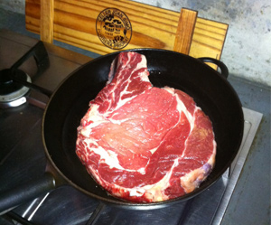

Cote de Boeuf
Cote de Boeuf auf beiden Seiten 2 Minuten anbraten. Im vorgeheizten Ofen bei 200 Grad ca. 20 Minuten (Kerntemperatur 55 Grad) garen. Salzen und mit Alufolie bedecken, 7 Minuten ruhen lassen. Wie ein Entrecote double (quer gegen die Fasern) aufschneiden.
